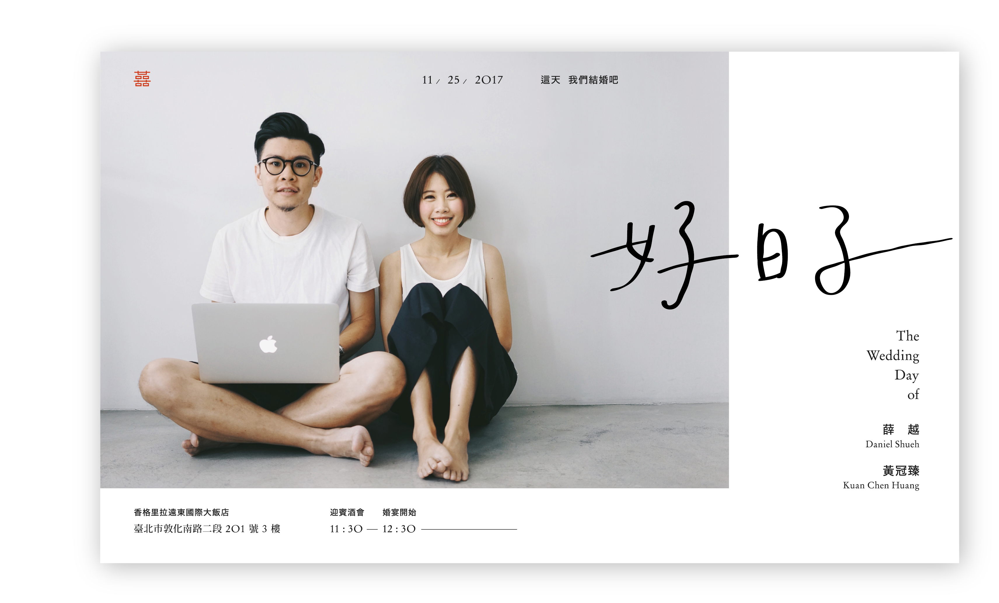
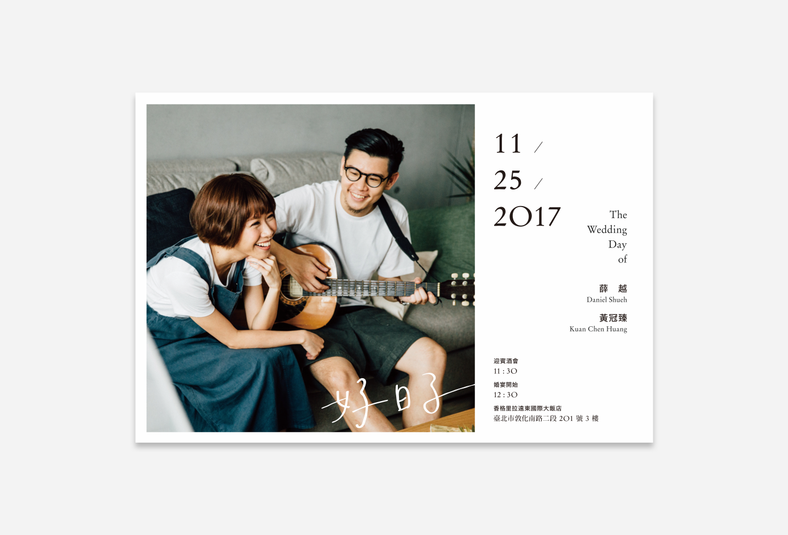

Shueh's Wedding invitation

為什麼喜帖一定要是一張硬卡？為什麼喜帖一定要是傳統正紅色？這次將新人的婚禮看作是一場活動，那麼喜帖就是貼在牆上的宣傳海報！喜帖的風格與新人的家中擺設相配合，採取比較輕盈簡潔的風格。
不同於以往的做法，婚禮上不再有令人尷尬的婚紗小卡，取而代之的是畫家: Wei Hsuan 的手繪新人頭像明信片與書籤，來賓可以帶回收藏且兼具實用性。
小卡與海報的印刷方式也採用手工的凸版印刷，讓文字更有層次，顏色也較四色印刷純。

